CRVI001015Édouard Manet - Le Fifre (The Fifer)
Oil on canvas · Musée d'Orsay, Paris · 1866
Oil on canvas · Musée d'Orsay, Paris · 1866

CRVI000862Julian Stanczak - Sequential Chroma
Screen print on paper · 76.8 × 65.4 cm · 1978
Screen print on paper · 76.8 × 65.4 cm · 1978

CRVI001031Adrian Ghenie - Weltwehmut
Albertina, Vienna · Infinitart Foundation · 2024
Albertina, Vienna · Infinitart Foundation · 2024

CRVI001034Adrian Ghenie - Untitled painting
Published in Interview
Published in Interview

CRVI001030Adrian Ghenie - Untitled painting
Oil on canvas · Sold Sotheby's London
Oil on canvas · Sold Sotheby's London

CRVI001021Gustave Courbet - L'Homme blessé (The Wounded Man)
Oil on canvas, 81.5 × 97.5 cm · Musée d'Orsay, Paris · 1844–1854
Oil on canvas, 81.5 × 97.5 cm · Musée d'Orsay, Paris · 1844–1854

CRVI001033Adrian Ghenie - Untitled painting
Galerie Judin, Berlin
Galerie Judin, Berlin

CRVI001024Gustave Courbet - Les Demoiselles des bords de la Seine (été)
Oil on canvas, 174 × 206 cm · Petit Palais, Paris · 1856–1857
Oil on canvas, 174 × 206 cm · Petit Palais, Paris · 1856–1857

CRVI001062Lezley Saar - Thérèse Raquin
From the series Madwoman in the Attic · 2011
From the series Madwoman in the Attic · 2011

CRVI000753Tetsuya Ishida - Refuel Meal
1996 · 1996
1996 · 1996

CRVI000756Tetsuya Ishida - Public Property
Kōkyōbutsu · acrylic on canvas · 1999
Kōkyōbutsu · acrylic on canvas · 1999

CRVI000750Tetsuya Ishida - Supermarket
Acrylic on board · 103 × 145.6 cm · 1996
Acrylic on board · 103 × 145.6 cm · 1996

CRVI001035Adrian Ghenie - The Flirt
Oil on canvas, 250 × 220 cm · Galerie Judin, Berlin · 2021
Oil on canvas, 250 × 220 cm · Galerie Judin, Berlin · 2021

CRVI001102Georges Seurat - Models (Poseuses)
Oil on canvas, 200 × 249.9 cm · The Barnes Foundation, Philadelphia · 1886–1888
Oil on canvas, 200 × 249.9 cm · The Barnes Foundation, Philadelphia · 1886–1888

CRVI001026Adrian Ghenie - The Arrival
Oil on canvas, 210 × 165 cm · 2014
Oil on canvas, 210 × 165 cm · 2014

CRVI000752Tetsuya Ishida - Awakening
1998 · 1998
1998 · 1998

CRVI001022Gustave Courbet - Le Fou de peur (The Man Mad with Fear)
Oil on paper mounted on canvas, 60.5 × 50.5 cm · Nasjonalmuseet, Oslo · c. 1844–1845
Oil on paper mounted on canvas, 60.5 × 50.5 cm · Nasjonalmuseet, Oslo · c. 1844–1845

CRVI000879Maurice Denis - L’Oratorio pour « L’Éternel Printemps »
Oil on joined paper laid down on canvas · 142 × 201 cm · 1904
Oil on joined paper laid down on canvas · 142 × 201 cm · 1904

CRVI000861Julian Stanczak - Yellow Filtration
Screenprint · 66 × 66 cm · 1981
Screenprint · 66 × 66 cm · 1981

CRVI001023Gustave Courbet - L'Homme à la pipe (Self-Portrait, Man with Pipe)
Oil on canvas, 45.8 × 37.8 cm · Musée Fabre, Montpellier · c. 1849
Oil on canvas, 45.8 × 37.8 cm · Musée Fabre, Montpellier · c. 1849

CRVI001063Lezley Saar - The Silent Woman
Shown in 'Lezley Saar: Salon des Refusés', California African American Museum, 2017–18
Shown in 'Lezley Saar: Salon des Refusés', California African American Museum, 2017–18

CRVI001064Lezley Saar - Untitled painting
Shown in 'Lezley Saar: Salon des Refusés', California African American Museum, 2017–18
Shown in 'Lezley Saar: Salon des Refusés', California African American Museum, 2017–18

CRVI001020Gustave Courbet - Le Désespéré (The Desperate Man)
Oil on canvas, 45 × 54 cm · Private collection · 1843–1845
Oil on canvas, 45 × 54 cm · Private collection · 1843–1845

CRVI000863Julian Stanczak - Sharing in Orange
Acrylic on canvas · 107.3 × 107.3 cm · 1970
Acrylic on canvas · 107.3 × 107.3 cm · 1970

CRVI001018Édouard Manet - Portrait of Minnay
Oil on canvas, 32 × 24 cm · Sold Drouot Estimations, 26 February 2021 · c. 1879
Oil on canvas, 32 × 24 cm · Sold Drouot Estimations, 26 February 2021 · c. 1879

CRVI001019Édouard Manet - The Spanish Singer
Oil on canvas, 147.3 × 114.3 cm · The Metropolitan Museum of Art, New York · 1860
Oil on canvas, 147.3 × 114.3 cm · The Metropolitan Museum of Art, New York · 1860

CRVI001060Ingo Swann - Cosmic painting

CRVI001061Ingo Swann - Cosmic painting

CRVI000757Tetsuya Ishida - Gripe
Acrylic on canvas mounted on board · 42.2 × 59.4 cm · 1997
Acrylic on canvas mounted on board · 42.2 × 59.4 cm · 1997

CRVI000858Julian Stanczak - Unbounded
1991 · 1991
1991 · 1991

CRVI001027Adrian Ghenie - Charles Darwin as a young man
Oil on canvas, 49 × 32.5 × 4.5 cm · 2014
Oil on canvas, 49 × 32.5 × 4.5 cm · 2014

CRVI001017Henri Fantin-Latour - Édouard Manet
Oil on canvas · Art Institute of Chicago · 1867
Oil on canvas · Art Institute of Chicago · 1867

CRVI000759Tetsuya Ishida - Rooftop Refugee
Acrylic on board · 145.8 × 103.3 cm · 1996
Acrylic on board · 145.8 × 103.3 cm · 1996

CRVI001025Gustave Courbet - La Voyante (La Somnambule)
Oil on canvas · Musée des Beaux-Arts et d'Archéologie, Besançon · c. 1865
Oil on canvas · Musée des Beaux-Arts et d'Archéologie, Besançon · c. 1865

CRVI001028Adrian Ghenie - Untitled painting
Oil on canvas · Sold Sotheby's London
Oil on canvas · Sold Sotheby's London

CRVI000877Maurice Denis - La Fontaine
Esquisse préparatoire du décor Terre Latine · peinture à l’essence sur papier calque collé sur toile · 1906–1908
Esquisse préparatoire du décor Terre Latine · peinture à l’essence sur papier calque collé sur toile · 1906–1908

CRVI001036Adrian Ghenie - Untitled painting
Christie's
Christie's

CRVI000864Julian Stanczak - Airy
1973 · 1973
1973 · 1973
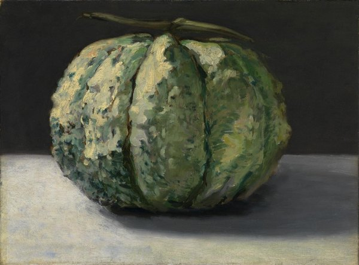
CRVI001016Édouard Manet - The Melon
Oil on canvas, 32.6 × 44.1 cm · National Gallery of Victoria, Melbourne · c. 1880
Oil on canvas, 32.6 × 44.1 cm · National Gallery of Victoria, Melbourne · c. 1880
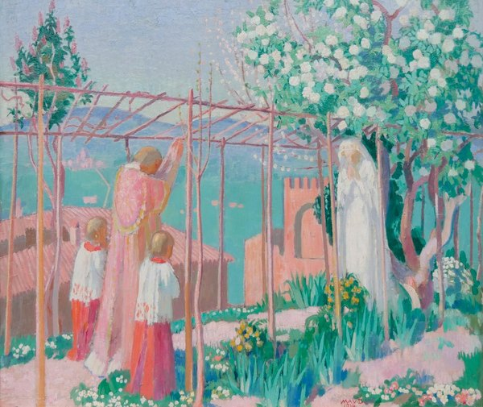
CRVI000878Maurice Denis - Annonciation d’Assise
Huile sur carton · 54,5 × 72 cm · 1914
Huile sur carton · 54,5 × 72 cm · 1914

CRVI000808Mark Tansey - Nature’s Ape
Oil on canvas · 195.6 × 167.6 cm · 1984
Oil on canvas · 195.6 × 167.6 cm · 1984

CRVI000806Mark Tansey - The Myth of Depth
Detail · oil on canvas, 99 × 226.1 cm · 1984
Detail · oil on canvas, 99 × 226.1 cm · 1984

CRVI000859Julian Stanczak - Conferring Blue
Screenprint · 68.6 × 68.6 cm · 1981
Screenprint · 68.6 × 68.6 cm · 1981

CRVI000807Mark Tansey - Study for Action Painting II
Study · oil on canvas · 1985
Study · oil on canvas · 1985
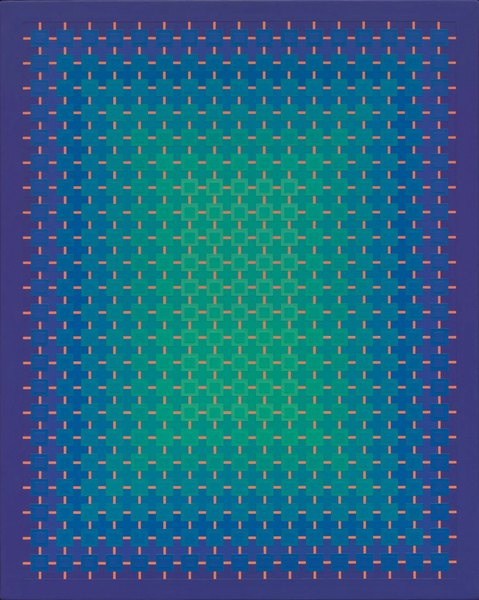
CRVI000857Julian Stanczak - Homage
Acrylic on canvas · 1990
Acrylic on canvas · 1990
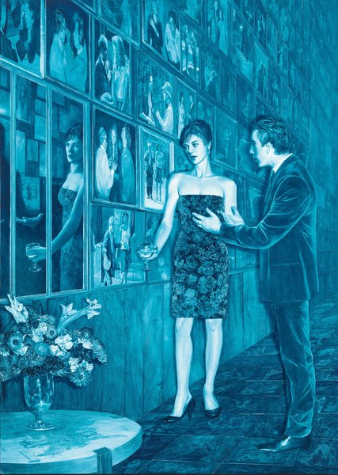
CRVI000805Mark Tansey - Reverb
Oil on canvas · 213.4 × 152.4 cm · 2017
Oil on canvas · 213.4 × 152.4 cm · 2017
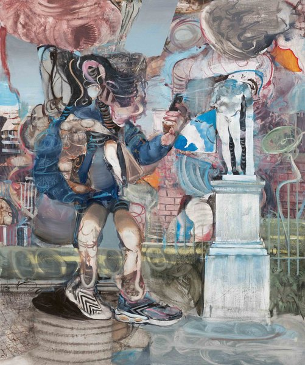
CRVI001032Adrian Ghenie - Untitled painting
Published in Flaunt
Published in Flaunt
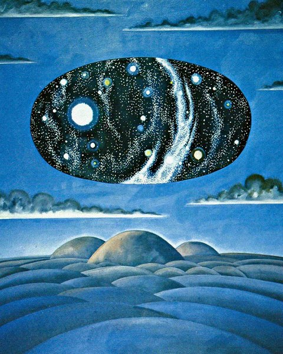
CRVI001059Ingo Swann - Cosmic painting
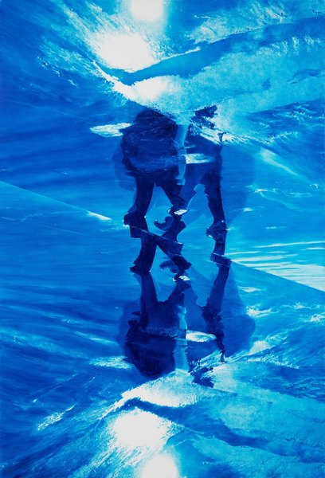
CRVI000809Mark Tansey - Xing
Oil on canvas · 223.5 × 152.4 cm · 2021
Oil on canvas · 223.5 × 152.4 cm · 2021

CRVI001065Lezley Saar - Cell Realization
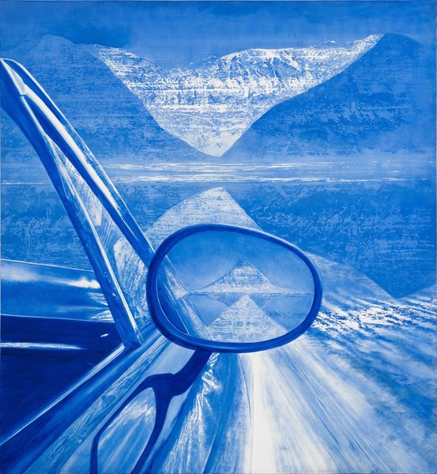
CRVI000813Mark Tansey - Revelever
Oil on canvas
Oil on canvas
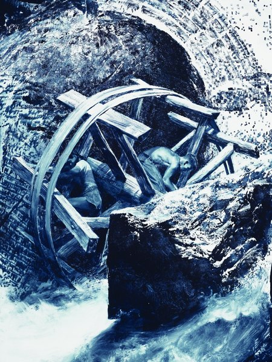
CRVI000812Mark Tansey - Repairing the Wheel
Oil on canvas · 1996
Oil on canvas · 1996
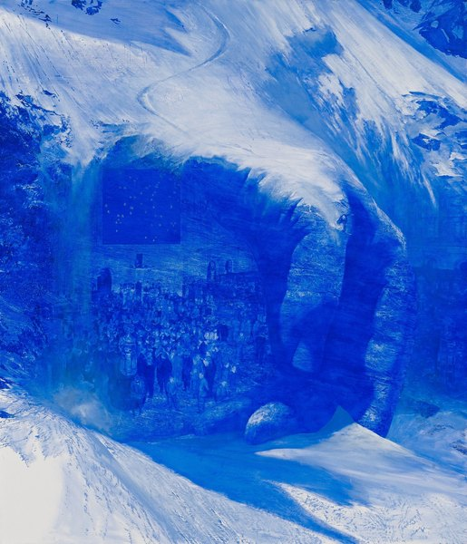
CRVI000810Mark Tansey - Invisible Hand
Oil on canvas · 213 × 182.6 cm · 2011
Oil on canvas · 213 × 182.6 cm · 2011

CRVI001029Adrian Ghenie - Untitled painting
Oil on canvas · Pace Gallery
Oil on canvas · Pace Gallery
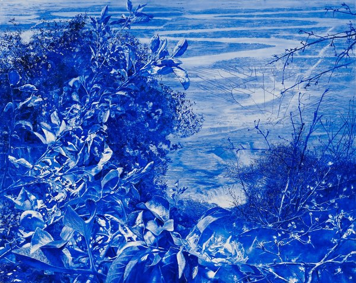
CRVI000811Mark Tansey - Apple Tree
Oil on canvas · 200.7 × 254 cm · Museum of Fine Arts, Houston · 2008–09
Oil on canvas · 200.7 × 254 cm · Museum of Fine Arts, Houston · 2008–09
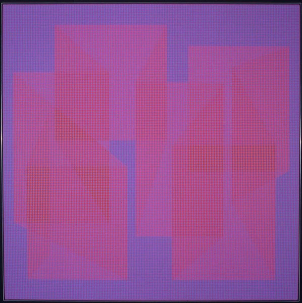
CRVI000860Julian Stanczak - Connecting
145 × 145 cm · 1967
145 × 145 cm · 1967
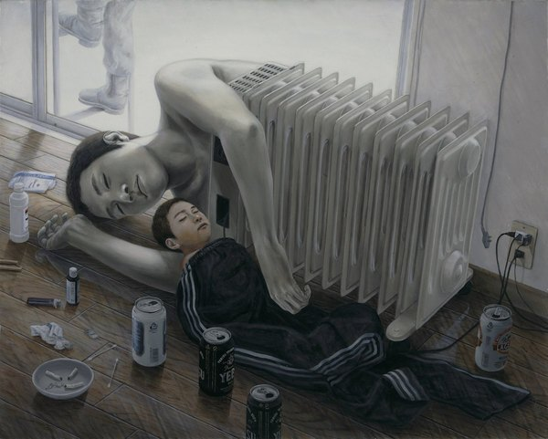
CRVI000758Tetsuya Ishida - Hothouse
Onshitsu · acrylic and oil on canvas · 72.6 × 90.9 cm · 2003
Onshitsu · acrylic and oil on canvas · 72.6 × 90.9 cm · 2003
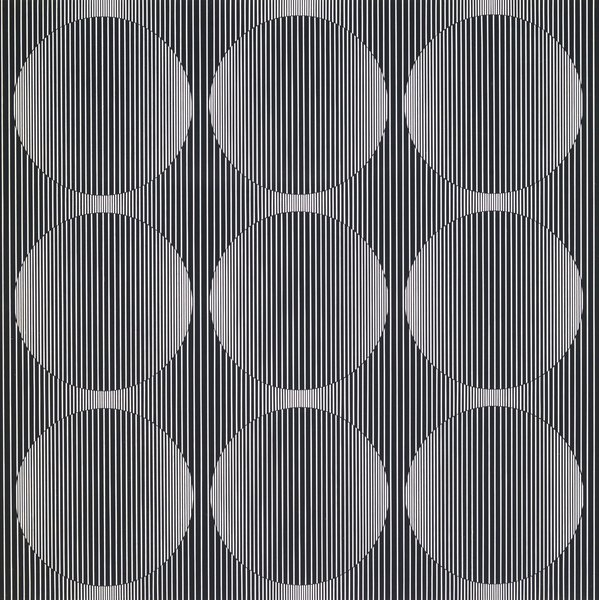
CRVI000866Julian Stanczak - Solar
Oil on plastic · 91.4 × 91.4 cm · 1972
Oil on plastic · 91.4 × 91.4 cm · 1972

CRVI000751Tetsuya Ishida - Exercise Equipment
Acrylic on board · 103 × 145.6 cm · 1997
Acrylic on board · 103 × 145.6 cm · 1997
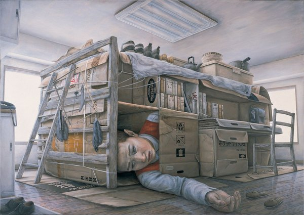
CRVI000755Tetsuya Ishida - Untitled
1998 · 1998
1998 · 1998